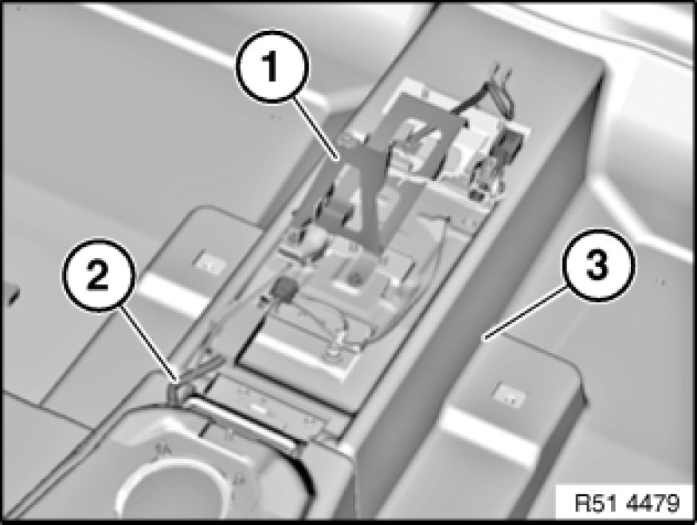

51 47 440 Removing and Installing/Replacing Rear Carpet on Seat Pan
51 47 440 - Removing and installing/replacing rear carpet on seat pan

Necessary preliminary tasks:
- Remove left/right front seat
- Remove rear seat Rear Seat, Through-Loading
- Remove handbrake lever Removing and Installing (Replacing) Handbrake Lever
- Remove trim panel Removing and Installing/Replacing Trim for Left or Right Door Pillar (Bottom) for door pillars on left/right
- Remove front inside entrance cover strip 51 47 000 Removing and Installing/Replacing Front (Inside) Left or Right Entrance Cover Strip
- Remove entrance cover strip 51 47 030 Removing and Installing/Replacing Rear (Inside) Left or Right Entrance Cover Strip at rear inside
- Remove airbag control unit Service and Repair

Remove holder (1) for storage compartment.
Feed out cable (2) through carpet (3) and lay back.
Remove carpet (3).
Installation:
Make sure openings for air duct and attachment points are correctly positioned.
Make sure cable (2) is in correct position.